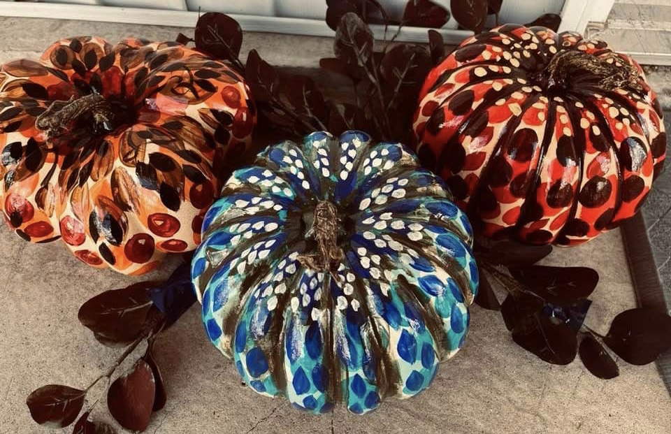
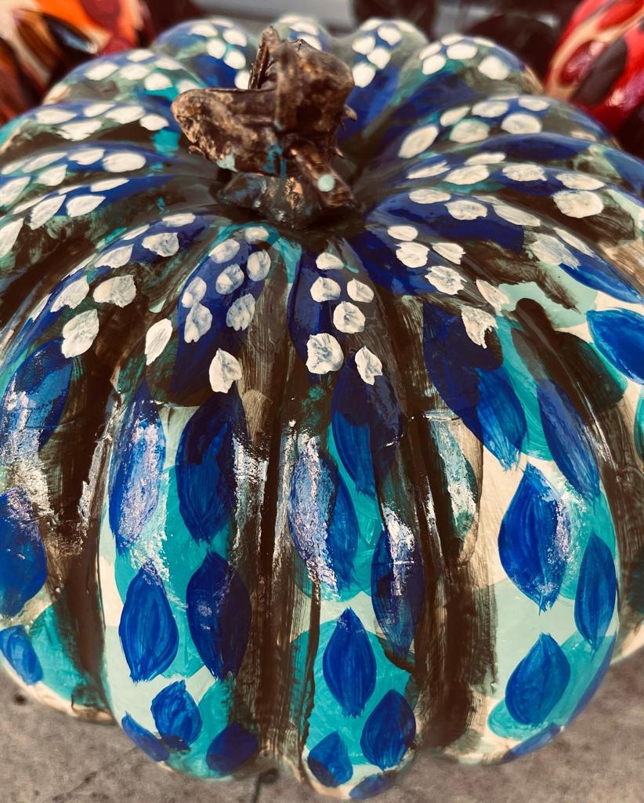
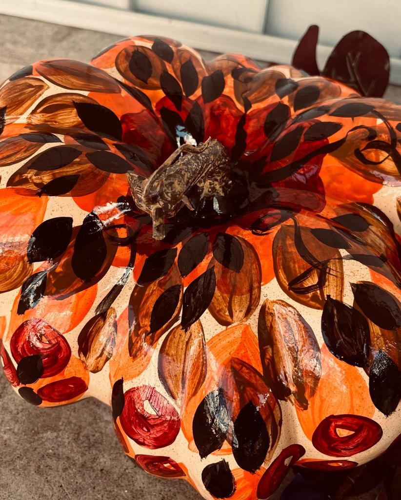
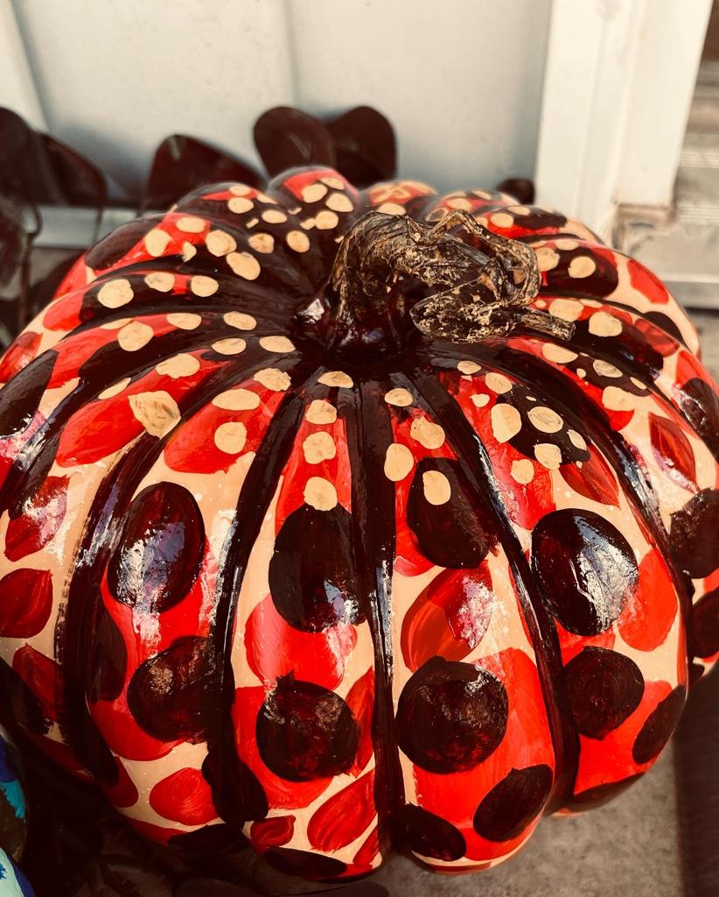

Home Decor: Fall Pumpkin
Year: 2022
Format: traditional
Medium: Artificial foam pumpkins green, orange, and yellow base coated
Tools: ¾’’ 19 mm, 2, 3, and 6 brushes; Aqua, Dutch aqua, apple red satin finish, harvest orange, turquoise, ultra marine blue, marsh green, maroon, 938 licorice, and 901 wicker white acrylic paints; Acrylic sealer gloss finish
Last fall's pumpkin art.




Copyright © Aratrika Ray-Dowling 2023